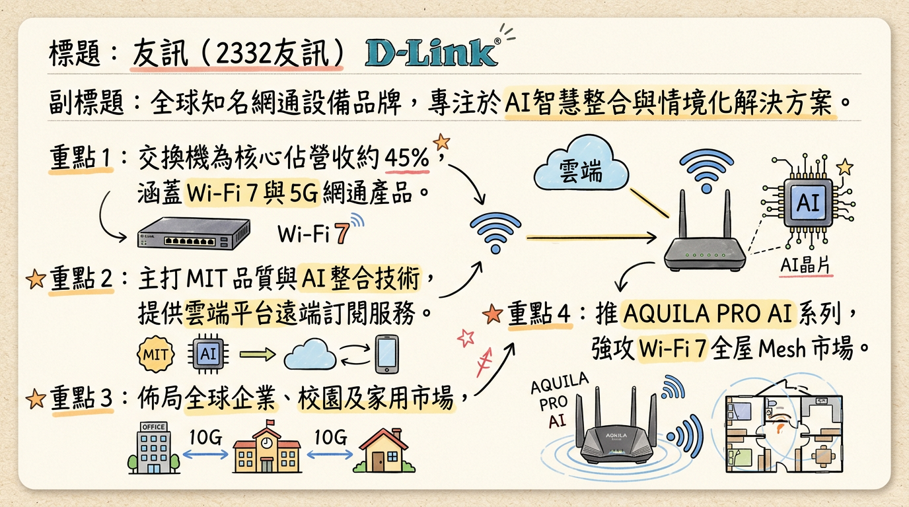
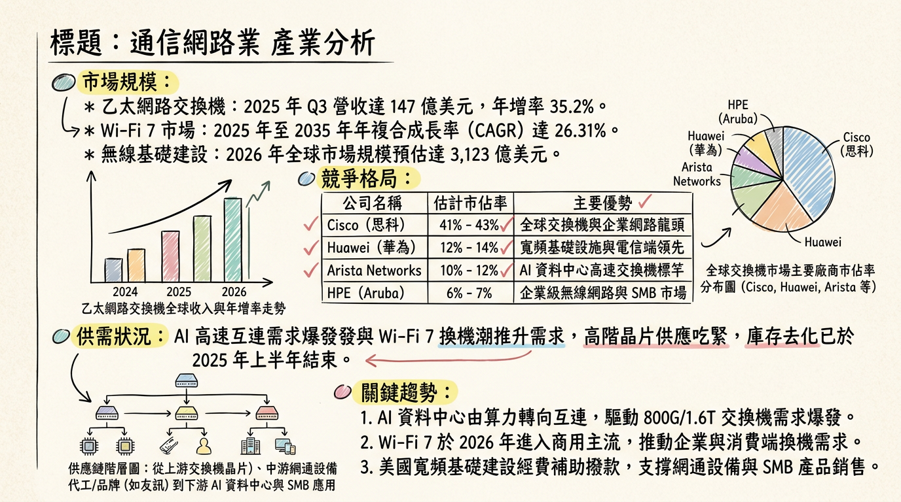
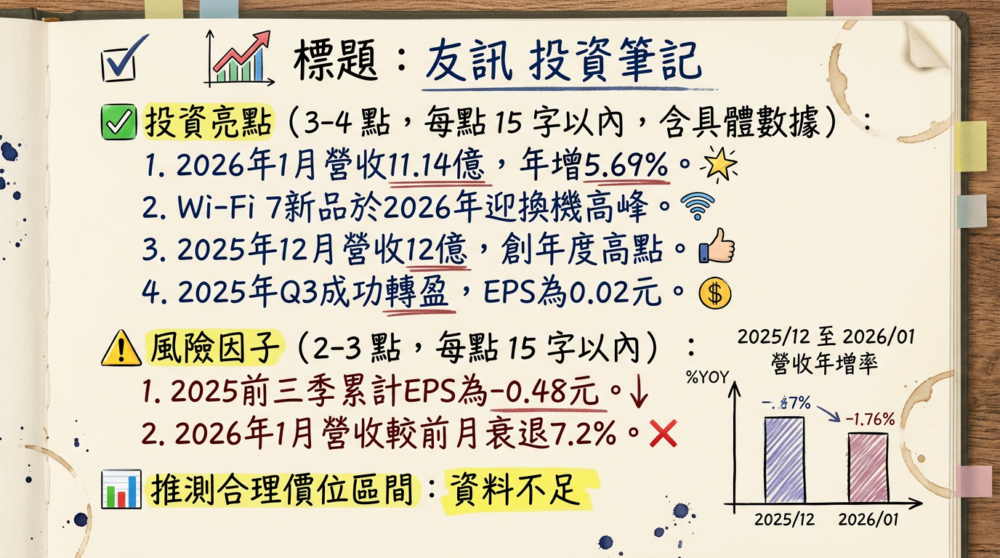

2332友訊 友訊 深度研究報告
一句話摘要
友訊（D-Link）正由傳統網通硬體商轉型為「AI情境化整合方案商」，受惠於 Wi-Fi 7 換機潮、MIT 轉單效益及印度市場高成長，2026 年有望確立獲利回升軌道。
公司概覽
友訊（D-Link）為全球知名網通品牌商，近期採取資產輕量化（Asset-light）策略，將經營重心轉向軟硬體整合與雲端訂閱服務（Nuclias / D-ECS）。
產品線與營收結構（2024-2025年數據）
| 產品類別 | 營收佔比 | 核心應用 / 產品系列 |
|---|
| 交換機 (Switches) | 43.4% ~ 46.0% | L3 核心交換機、2.5G/10G 智慧網管交換器 (DMS-1250) |
| 其他與數位家庭 | 34.4% | AQUILA PRO AI 系列 Wi-Fi 7 Mesh 路由器、IP Cam |
| 行動及寬頻網路 | 12.6% | 5G NR 行動熱點 (F530)、5G USB 網卡、FWA 設備 |
| 其他服務 | 7.0% | 雲端管理平台 (Nuclias, D-ECS) 訂閱收入 |
泛亞太及其他地區 67%（含印度）、歐洲 27%、美洲 6%。
核心競爭優勢
MIT（Made in Taiwan）品質信任： 台灣製造供應鏈佔比已提升至 65%，符合 NDAA 合規要求，在地緣政治推動的「去中化」趨勢下，於美歐政府及教育標案具備轉單優勢。
AI 整合解決方案： 推出 AQUILA PRO AI 系列，透過 AI 演算法優化流量管理（QoS）與自我修復功能，提升產品單價（ASP）。
印度市場領導地位： 子公司 D-Link India 在當地市佔領先，深度參與印度數位轉型與電信基礎建設。
財務分析
最近 6 個月月營收趨勢
| 月份 | 營收金額 (億元) | 月增率 (MoM) | 年增率 (YoY) |
|---|
| 2026/01 | 11.14 | -7.19% | +5.69% |
| 2025/12 | 12.00 | +9.72% | +4.11% |
| 2025/11 | 10.94 | -4.26% | -5.86% |
| 2025/10 | 11.43 | -6.58% | +2.36% |
| 2025/09 | 12.23 | +9.49% | -2.78% |
| 2025/08 | 11.17 | +1.16% | -9.44% |
季度與年度數據
- 2025 Q3 表現： 營收 34.44 億元（QoQ +9.3%），單季 EPS 0.02 元，成功扭轉連續兩季虧損（Q2 為 -0.23 元）。
- 年度獲利趨勢： 2024 年 EPS 為 0.06 元；2025 年前三季累計 EPS 為 -0.48 元。法人預估 2025 全年落在 -0.35 至 -0.45 元，2026 年在 Wi-Fi 7 帶動下有望全年轉盈。
法說會重點（2025/11/25）
- 營運拐點： 管理層明確指出 2025 上半年為營運谷底，Q3 起獲利轉正，2026 年重點在於「高毛利產品佔比優化」。
- 具體訂單： 已取得美國企業級客戶 5 年期大單，並於 2025 Q3 開始出貨；日本市場 10G 交換器專案於 2026 Q1 開始交付。
- 策略發言： 執行長張家瑞強調：「友訊不再只是賣硬體，而是透過 D-ECS 雲端平台提供加值服務，建立長期訂閱關係。」
券商觀點
市場目前對友訊持「謹慎中觀察復甦」態度。
| 券商名稱 | 日期 | 評等 | 目標價 | 觀點摘要 |
|---|
| Stockopedia | 2026/02/26 | 買進 (Buy) | 15.75 | 價值評估回升，預期 2026 轉虧為盈 |
| Markets Mojo | 2026/02/01 | 賣出 (Sell) | -- | 短期成長動能仍低於整體網通市場 |
| 法人(本土) | 2026/01/14 | 積極 (Positive) | -- | 受惠 Wi-Fi 7 新品題材與外資買超 |
| 群益投顧 | 2025/07/03 | 中立 (Neutral) | 19.0 (過時) | 當時預期 2025 虧損，待庫存去化 |
財報深度分析
利潤率趨勢表格
| 季度 | 毛利率 (%) | 營業利益率 (%) | 存貨週轉天數 |
|---|
| 2025 Q3 | 25.84 | -0.03 | 107.72 天 |
| 2025 Q2 | 24.93 | -2.08 | 125.40 天 |
| 2025 Q1 | 24.12 | -1.72 | 138.20 天 |
| 2024 Q4 | 25.27 | -5.13 | 140.60 天 |
- 存貨分析： 存貨週轉天數從 2024 年底的 140.6 天大幅下降至 107.72 天，顯示庫存去化已完成，進入健康備料期。
- 資本支出： 維持資產輕量化，每季支出約數千萬元，主要投入 R&D 設備與雲端平台開發。
股權異動
- 大股東減持： 2025/08/29 董事「慶欣欣鋼鐵」（台鋼集團成員）申報轉讓 10,000 張，需注意後續股權穩定性。
- 法人動態： 外資持股比率近期回升至約 11.97%。
- 資本變動： 2025-2026 年無新增庫藏股、CB 或增減資計畫。
產業分析
全球競爭格局與市佔比較（2025 預估）
| 公司 | 市佔/定位 | 2025 Q3 毛利率 | 核心優勢 |
|---|
| Cisco | 38% (Enterprise) | ~40-45% | 企業級壟斷、高階軟體生態 |
| TP-Link | 消費級第 1 | ~20-25% | 極致價格競爭力、規模經濟 |
| 友訊 (D-Link) | SMB 前 10 名 | 25.84% | MIT 資安認證、AI 智慧管理 |
| 智邦 (2345) | 白牌交換機大廠 | 20.8% | 800G 高速交換機技術領先 |
- 趨勢： Wi-Fi 7 市場預計 2025-2035 CAGR 達 26.31%，2026 年將進入商用主流換機潮。
近期催化劑
1. 2026/01 營收 YoY +5.69% 展現成長韌性。
2. Wi-Fi 7 產品線全數上線，ASP 預期提升 15-20%。
3. 日本集合住宅 10G 交換器專案開始貢獻營收。
1. 印度子公司 1,201 萬元裁罰案衝擊業外。
2. TP-Link 等陸系品牌在東南亞市場的價格戰壓力。
⭐ 成長動能時間軸
- 2025 Q3： 營運轉折點，單季由虧轉盈（EPS 0.02）。
- 2025 Q4： 5 年期美系企業大單出貨量爬坡。
- 2026 Q1： 日本市場 10G Switch 專案（首批 1 萬台）正式出貨。
- 2026 Q2： 全新 Wi-Fi 7 隱藏式天線路由器 (M36) 全面推廣至全球消費市場。
- 2026 H2： 印度市場數位化升級專案（EAP 基地台 5 萬台）持續挹注。
2026 展望
*
Wi-Fi 7 滲透率： 預估滲透率由 5% 提升至 25%，帶動網通設備升級潮。
* 企業雲訂閱： 雲端管理平台 D-ECS 貢獻穩定高毛利收入，優化長期獲利結構。
*
毛利壓力： 若 TP-Link 擴大低價競爭，友訊消費級產品毛利可能受壓。
* 地緣政治： 需觀察美中貿易關稅是否進一步波及東南亞產能。
投資結論
獲利拐點已現： 2025 Q3 轉盈為重要訊號，1 月營收年增顯示需求回暖。
規格升級紅利： Wi-Fi 7 與 10G 交換器是 2026 年核心成長引擎。
MIT 溢價： 在資安高度敏感市場具備替代陸系品牌之長期潛力。
建議區間： 考量 2026 年 EPS 有望轉正至 0.3-0.5 元，股價評價可望由淨值比（P/B）轉向本益比（P/E）評價。建議觀察 15.5 - 18.5 元區間，若能站穩 17 元漲停關鍵位，則技術面轉強。
本報告由 AI 自動產生，資料來源為公開網路資訊，僅供參考，不構成投資建議。產生時間：2026-03-01 21:32
📊 資訊卡


